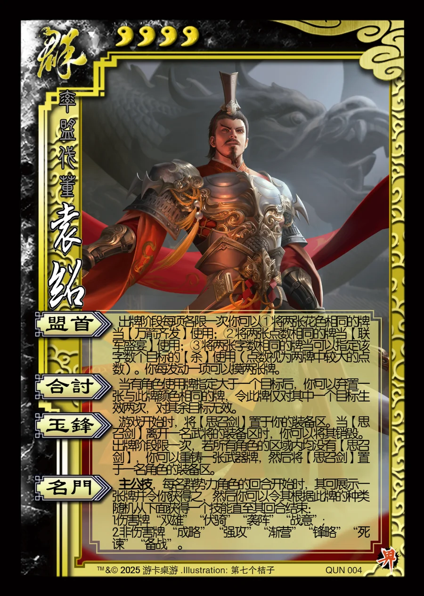

点击卡面查看大图
群
界袁绍
♥4率盟伐董
盟首
出牌阶段每项各限一次,你可以①将两张花色相同的牌当【万箭齐发】使用；②将两张点数相同的牌当【联军盛宴】使用；③将两张字数相同的牌当可以指定该字数个目标的【杀】使用（点数视为两牌中较大的点数）。你每发动一项可以摸两张牌。
合讨
当有角色使用牌指定大于一个目标后，你可以弃置一张与此牌颜色相同的牌，令此牌仅对其中一个目标生效两次，对其余目标无效。
玉锋
游戏开始时，将【思召剑】置于你的装备区。当【思召剑】离开一名武将的装备区时，你可以将其销毁。出牌阶段限一次，若所有角色的区域内均没有【思召剑】，你可以重铸一张武器牌，然后将【思召剑】置于一名角色的装备区。
名门主公技
主公技，每名群势力角色的回合开始时，其可展示一张牌并令你获得之，然后你可以令其根据此牌的种类随机从下面获得一个技能直至其回合结束：
1.伤害牌 “双雄”“伏骑”“袭阵”“战意”;
2.非伤害牌 “成略” “强攻”“渐营”“锋略”“死谏”“备战”。